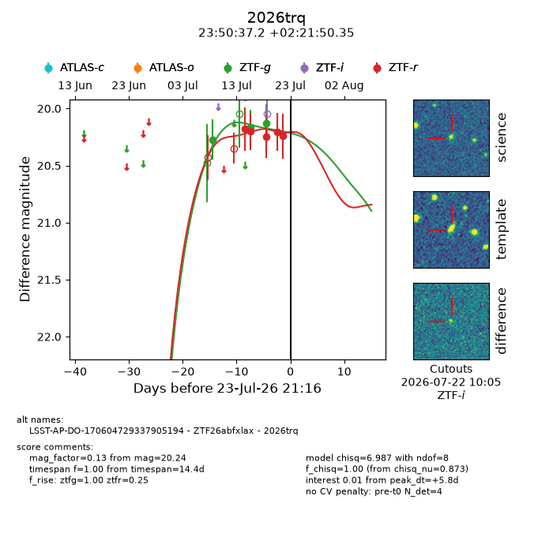
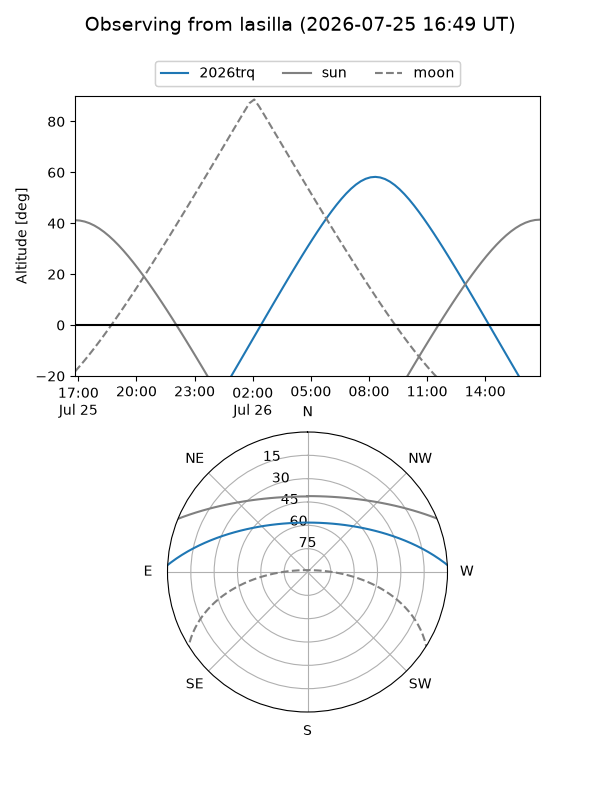
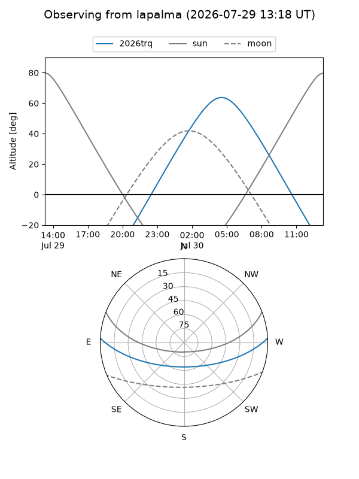
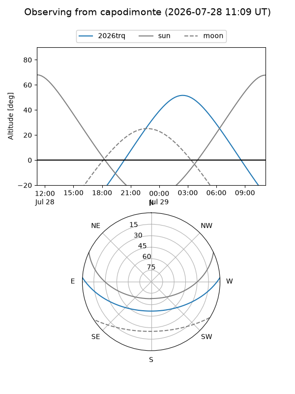
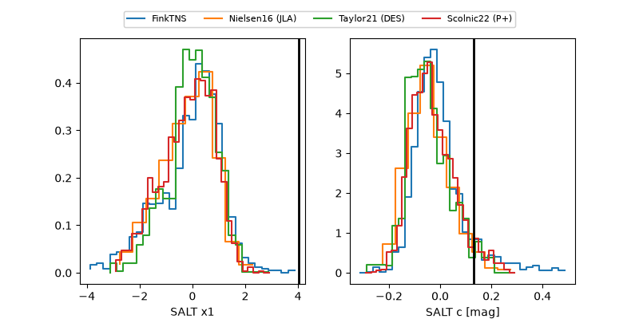

2026trq
Target 2026trq at 2026-07-23 21:19
Aliases and brokers:
FINK-ZTF: ztf.fink-portal.org/ZTF26abfxlax
Lasair-ZTF: lasair-ztf.lsst.ac.uk/objects/ZTF26abfxlax
ALeRCE-ZTF: alerce.online/object/ZTF26abfxlax
YSE-PZ: ziggy.ucolick.org/yse/transient_detail/2026trq
TNS name: wis-tns.org/object/2026trq
Direct TNS query: direct search
alt names
ZTF26abfxlax (ztf,fink_ztf)
2026trq (tns,yse)
LSST-AP-DO-170604729337905194 (iau_lsst)
Coordinates:
equatorial (ra, dec) = 357.6552,+2.36399
equatorial (HMS+DMS) = 23:50:37.24,+02:21:50.35
galactic (l, b) = (94.1173,-57.06590)
Flags:
TNS type: nan
peak dt: +5.8
Photometry:
last ztfg=20.13, ztfr=20.24
3 ztfg, 5 ztfr detections
Lightcurve

Visibility



Additional plots
